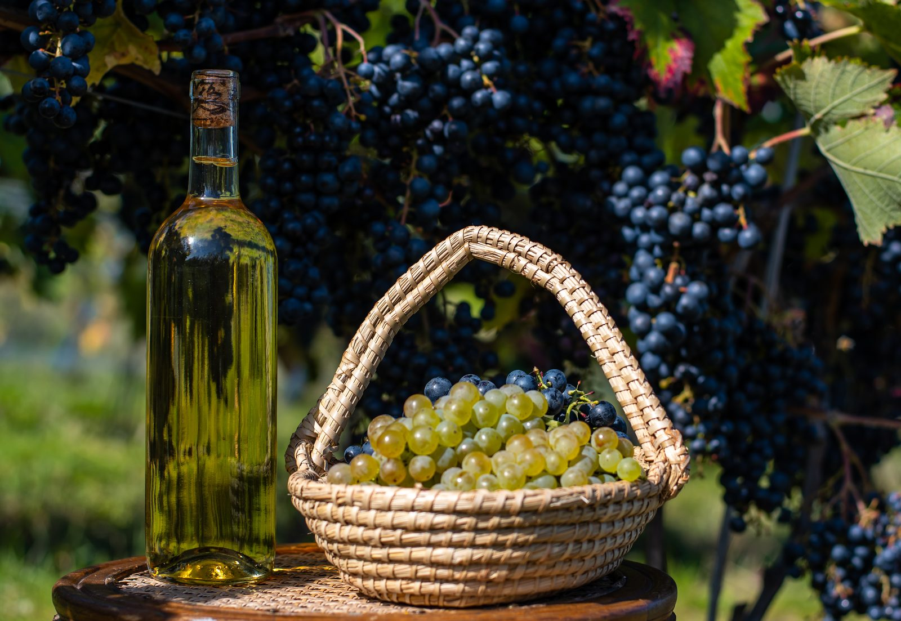
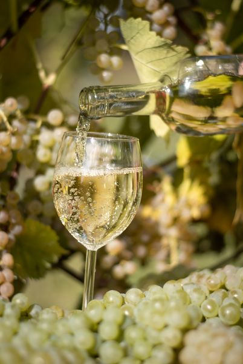
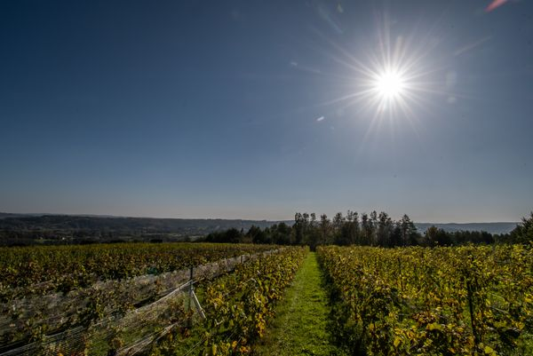

Soki 100% z winogron
Soki winogronowe
Soki z białych winogron z naszej winnicy — w 100% naturalne, bez żadnych dodatków.
Poza winem wytwarzamy soki z białych winogron. Są w stu procentach naturalne: bez cukru, bez wody, bez konserwantów i barwników. To po prostu wyciśnięte grona z naszej winnicy.
Soki powstają z tych samych białych odmian, które uprawiamy na wino — Souvignier Gris, St. Pepin, Vidal Blanc i Seyval Blanc. Ich smak zmienia się więc z rocznika na rocznik, zależnie od tego, jak dojrzały grona.
Skąd pochodzą nasze soki
Winnica Kielna Góra leży w Kielnarowej, około 10 km od centrum Rzeszowa, na stoku o południowym nachyleniu. Gospodarujemy na jednym hektarze, a pierwsze krzewy zasadziliśmy w 2020 roku. Soki tłoczymy z białych odmian rosnących na tym samym stoku, co winogrona na wino.
Charakterystyka
- 100% soku z winogron
- bez cukru i konserwantów
- z białych odmian z naszej winnicy
Zdjęcia


Soki w naszym sklepie
Sprawdź aktualną dostępność w naszym sklepie.